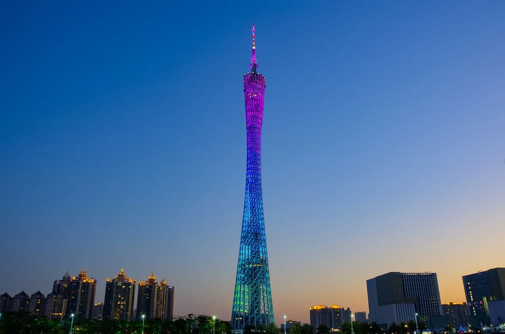
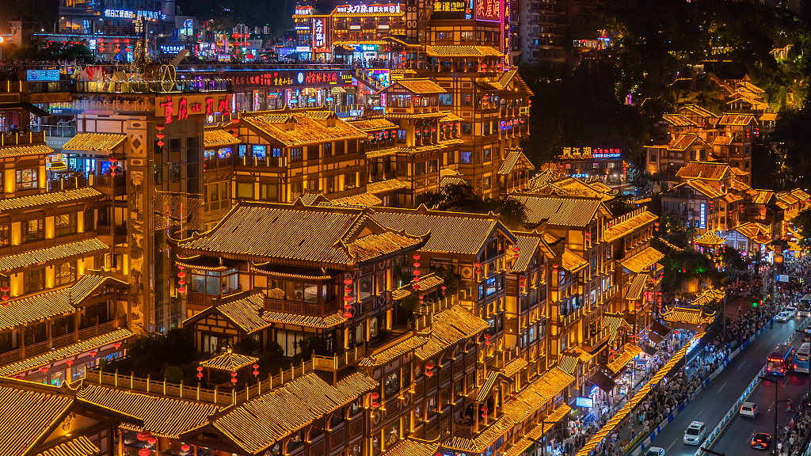
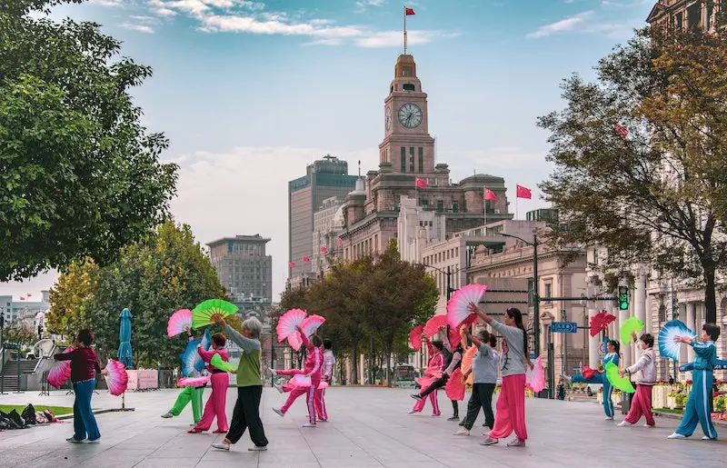

Explore the spiritual tranquility of Zhoushan Putuo Mountain, a key site for Buddhist pilgrimage. Engage with the local culture and breathtaking views.
Listen to a introduction of Putuo Mountain to start the fabulous tour:
Discover the serene beauty of Zhoushan Putuo Mountain, a revered site nestled on an island off the eastern coast of China. This sacred mountain is one of the four holy mountains in Chinese Buddhism, dedicated to Guanyin, the Goddess of Mercy. Visitors are drawn to its tranquil monasteries, lush forests, and pristine beaches, making it a perfect retreat for spiritual rejuvenation and contemplation. The area is steeped in myth and legend, with numerous temples that date back centuries, each telling a story of faith and devotion. Explore winding trails that lead to panoramic viewpoints, offering breathtaking vistas of the surrounding archipelago. This tour not only promises a deep dive into the spiritual heart of Buddhist culture but also an opportunity to connect with nature in one of China's most picturesque locales.Beyond its spiritual significance, Zhoushan Putuo Mountain is famous for its enchanting "Sea of Clouds." On rare occasions, usually after a rainstorm followed by clear skies, visitors can witness a breathtaking phenomenon where clouds roll in thick and fast, enveloping the mountain in a soft, white blanket. This natural spectacle provides a surreal experience as if one is walking on clouds, blending the boundaries between heaven and earth.
Puji Temple
Visit Puji Temple, the largest and most renowned temple on the island.Explore the grand halls and observe the monks during their daily prayers. Don't miss the chance to light incense and wish for good fortune.
Audio Inquiry: "请问去普济寺怎么走？" (How do I get to Puji Temple?)
Mandarin Chinese
dialect
Hundred Step Beach
Walk to Hundred Step Beach for a moment of reflection by the sea.
Audio Inquiry: "请问百步崖在哪里" (can I ask where is the Hundred Step Beach?)
Enjoy the serene views and listen to the waves. This is a perfect spot for meditation or a leisurely stroll along the shore.
Mandrain Chinese
dialect
Statue of Guanyin
Climb up to the Statue of Guanyin, an impressive sight standing tall against the skyline.
Audio Inquiry: "请问到观音像怎么走？" (How do I get to the Guanyin statue?)
Learn about the legend of Guanyin, the Goddess of Mercy, whom the island is dedicated to. The statue is not only a spiritual symbol but also offers one of the best panoramic views of the surrounding sea.
Mandrain Chinese
dialect
Fayu Temple
Visit Fayu Temple, known for its intricate carvings and peaceful surroundings.
Audio Inquiry: "法雨寺里有哪些必看的艺术品？" (What are the must-see artifacts in Fayu Temple?)
Explore the temple's ancient architecture and discover the hidden artworks that adorn its walls, each telling a story of the island's rich cultural heritage.
Mandrain Chinese
dialect
Find a local restaurant
After a happy day of traveling, try to ask a local people where is the best restaurant here
Audio Inquiry: "你认为这里最好吃的食物是哪家店" (What is the best local restaurant around here?)
Explore the best food by a local's recommandation, travel like a local, eat like a local.
Mandrain Chinese
dialect
Return to the Base
Descend to the base of the mountain.
Audio Inquiry: "最后的渡轮是几点？" (What time is the last ferry?)
Conclude your tour where you started. Reflect on your journey and the tranquility you experienced. Perhaps stop at a local tea shop to sample some of the island's famous green tea.
Mandrain Chinese
dialect
Guangzhou Canton Tower Tour

Listen to a introduction of Guangzhou Canton Tower to start the fabulous tour:
Experience the dynamic city of Guangzhou from its most iconic landmark, the Canton Tower. Soaring over 600 meters into the sky, the tower offers an unparalleled view of the sprawling urban landscape below. Known locally as the "Slim Waist," it lights up the Pearl River skyline with its mesmerizing LED displays. Step onto its observation deck for a dizzying look at the city, or dare to ride the Sky Drop, the highest thrill ride in the world. The tower also hosts a rotating restaurant where you can savor gourmet Chinese and international cuisine while the cityscape rotates beneath you. This tour is perfect for those looking to capture the essence of modern China, where tradition meets cutting-edge architecture and technology. The Canton Tower features a unique engineering marvel known as the "Twisted Grid." While it enhances the aesthetic appeal of the tower, making it one of the most visually striking structures in the world, this design also significantly increases the structure's stability. The geometric design distributes weight more evenly, allowing it to withstand typhoon winds and earthquake tremors, crucial for a skyscraper in this region.
Step 1: Canton Tower Observation Deck
Audio Inquiry: "游客中心在哪里？" (Where is the visitor center?)
Start your tour at the Canton Tower by ascending to the observation deck. Experience panoramic views of Guangzhou from one of the world's tallest structures.
Mandrain Chinese
dialect
Step 2: Sky Drop Thrill Ride
Audio Inquiry: "怎么去这个地方？" (How can I get to the sky drop?)
Thrill-seekers can experience the Sky Drop, the highest thrill ride in the world, located on the Canton Tower. Feel the rush of adrenaline as you drop from the top.
Mandrain Chinese
dialect
Step 3: Dine at the Rotating Restaurant
Enjoy a meal at the revolving restaurant inside the Canton Tower. Dine on exquisite dishes while the cityscape rotates beneath you.
Mandrain Chinese
dialect
Chongqing Hongya Cave Tour

Listen to a introduction of Chongqin Hongya cave to start the fabulous tour:
Venture into the heart of Chongqing to explore the Hongya Cave, an architectural marvel built directly into the cliff face overlooking the Jialing River. This historical complex echoes the traditional stilted houses of the region, rising several stories high and lit by thousands of red lanterns at night, creating a magical atmosphere. Hongya Cave is not only a treat for architecture enthusiasts but also a bustling marketplace where visitors can shop for local handicrafts, taste spicy Sichuan cuisine, and enjoy cultural performances. The cave offers a unique blend of commercial zest and traditional architecture, making it a must-visit destination for anyone seeking to understand Chongqing's rich cultural heritage and vibrant street life. Beneath the bustling streets and traditional stilted architecture of Hongya Cave lies a lesser-known network of ancient waterways. These hidden channels were once crucial for transport and trade in old Chongqing and now serve as an underground attraction that few tourists know about. Tours of these waterways provide a glimpse into the area's historical commerce dynamics and the architectural ingenuity of ancient times.
Step 1: Arrival at Hongya Cave
Begin your tour at the iconic Hongya Cave, a remarkable architectural complex built into a cliffside. It embodies traditional Chongqing stilt house design and offers numerous shops, restaurants, and tea houses.
Mandrain Chinese
dialect
Step 2: Explore the Market
Wander through the vibrant market within Hongya Cave. Try local snacks like spicy Chongqing noodles and shop for souvenirs among the art and craft stalls.
Mandrain Chinese
dialect
Step 3: Visit Cultural Sites
Explore the cultural exhibitions that detail the history and folklore of Chongqing. Don't miss the miniature landscapes and historical dioramas.
Mandrain Chinese
dialect
Step 4: Enjoy the View at Sunset
Conclude your visit by watching a stunning sunset from the top of Hongya Cave, offering breathtaking views over the Jialing River and the city skyline.
Mandrain Chinese
dialect
Shanghai The Bund Tour

Listen to a introduction of Shanghai Bund to start the fabulous tour:
Walk along The Bund, the historic waterfront area in Shanghai that serves as a symbol of the city's past and present. Lined with colonial-era buildings that reflect its international heritage, The Bund faces the modern skyscrapers of the Pudong district, creating a stark contrast that encapsulates the evolution of Shanghai from a bustling trading port to a global financial hub. This tour offers an enlightening journey through Shanghai's colonial history while offering stunning views of its futuristic skyline. From luxury shopping to historical exploration, The Bund is a testament to Shanghai's ability to preserve its heritage amidst rapid modernization. It's an ideal spot for photographers and history buffs alike, offering a snapshot of a city that's always on the move. The Bund is home to a hidden numerical enigma. Almost every historical building along the waterfront has a plaque detailing its construction year, and if you add up these years, the sum interestingly correlates with significant historical events in Shanghai. This numerical "code" was unintentional but has become a quirky point of interest for history enthusiasts and conspiracy theorists alike, adding a layer of mystery to the already fascinating backdrop of The Bund.
Step 1: Historical Walk Along The Bund
Begin your tour with a walk along The Bund, observing the historical buildings that showcase a range of architectural styles from Gothic to Baroque.
Mandrain Chinese
dialect
Step 2: Huangpu River Cruise
Take a river cruise along the Huangpu, viewing both the historic architecture of The Bund and the modern skyscrapers of Pudong.
Mandrain Chinese
dialect
Step 3: Shopping and Dining
Explore the upscale shops and restaurants in the area. Experience Shanghai's vibrant nightlife and culinary scene.